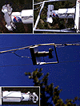
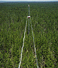
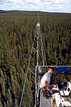
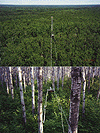

P.I.(s): Donald Deering -- NASA/Goddard Space Flight Center
Co-I(s): Elizabeth Middleton -- NASA/GSFC; Suraiya Ahmad, Tom Eck -- Hughes STX Corp.
Objectives: The objectives of this study are:
See the PARABOLA Web site for more information.
|  Closeup of the PARABOLA on the tram guidewires |  The PARABOLA at the Old Jack Pine site (SSA-OJP) |
|  The PARABOLA at the Old Black Spruce site (SSA-OBS) |  The PARABOLA above and below the canopy at the Old Aspen site (SSA-OA) |
| All pictures courtesy of the PARABOLA Web site. | |
Equipment Used and Data Collected:
PARABOLA bidirectional reflectivity/directional transmittance data were collected at 5 degree solar zenith angle intervals, clouds permitting, from approximately 75 degrees SZA to solar noon. The PARABOLA measures a 4 pi hemisphere area with 15 degree IFOV sectors in 11 seconds. Measurements of the reflected radiances from a characterized barium sulfate reference panel with a Barnes Modular Multiband Radiometer (MMR) were taken concurrently with PARABOLA measurements during the BOREAS experiment in order to characterize spectral solar irradiance. Pyranometers were used to measure irradiance, albedo, and transmittances (Eppley PSP pyranometers and Skye Probetech PAR sensors), but only on the sites and dates of PARABOLA data acquisitions. ASD PS II Spectroradiometer reflectance factors from nadir PS II spectrometer measurements were also taken on selected sites on 8 dates in IFC-2 and IFC-3 combined.
Summary of Places and Times of Measurements:
Measurements were made at 3 sites in the BOREAS Southern Study Area (SSA): Old Aspen (OA), Old Black Spruce (OBS), and Old Jack Pine (OJP). Above canopy measurements are listed in the middle column and below canopy measurements are listed in the right column.
| Field Campaign | Above Canopy Site & Date | Below Canopy Site & Date |
|---|---|---|
| FFC-Thaw | SSA-OBS 4/16/95 SSA-OBS 4/19/94 SSA-OA 4/24/94 | SSA-OA 4/26/94 |
| IFC-1 | SSA-OA 5/25/94 SSA-OA 5/26/94 SSA-OJP 5/29/94 SSA-OJP 5/31/94 SSA-OBS 6/6/94 SSA-OBS 6/7/94 SSA-OA 6/11/94 | SSA-OJP 6/1/94 SSA-OJP 6/4/94 SSA-OA 6/17/94 |
| IFC-2 | SSA-OA 7/21/94 SSA-OJP 7/25/94 SSA-OJP 7/30/94 SSA-OJP 8/2/94 SSA-OBS 8/4/94 | SSA-OA 7/23/94 SSA-OJP 7/24/94 SSA-OBS 8/8/94 SSA-OBS 8/9/94 |
| IFC-3 | SSA-OA 8/31/94 SSA-OA 9/17/94 SSA-OJP 9/5/95 SSA-OJP 9/6/94 SSA-OBS 9/12/94 SSA-OBS 9/13/94 | SSA-OA 9/1/94 SSA-OA 9/18/94 SSA-OJP 9/2/94 SSA-OBS 9/16/94 |
RSS Overview || RSS-1 | RSS-2 | RSS-3 | RSS-4 | RSS-5 | RSS-6 | RSS-7 | RSS-8 | RSS-9 | RSS-10
RSS-11 | RSS-12 | RSS-13 | RSS-14 | RSS-15 | RSS-16 | RSS-17 | RSS-18 | RSS-19 | RSS-20
 Send a data request to the BOREAS Data Manager (BOREAS Investigators only)
Send a data request to the BOREAS Data Manager (BOREAS Investigators only)
E-Mail a comment on this page to the curator 
Send e-mail to Jaime Nickeson, the BORIS representative for the RSS group
Return to the RSS Overview
Return to the BOREAS Science Groups Overview
Return to the BOREAS Home Page
Last Updated: October 10, 1997
{kind=link}
{kind=link}
{kind=link}
{kind=link}